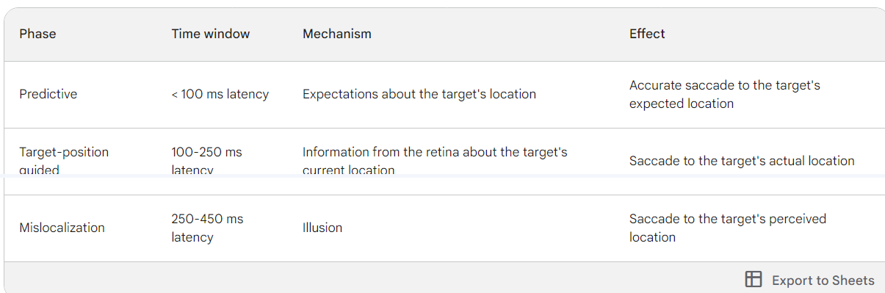
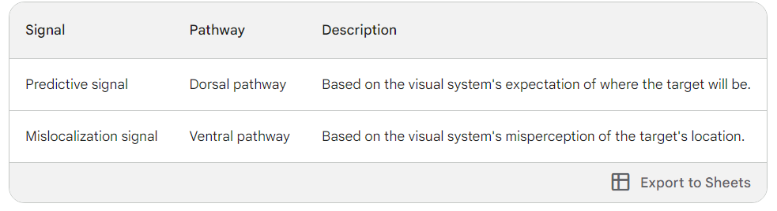

Current Hypothesis
- Hypothesis makes the intriguing prediction that the timing
of an imminent saccade (latency of the saccade) can affect the perceived position of a moving object.
- In support of this hypothesis, it has been reported that when observers execute saccades to objects that are perceptually
shifted due to the flash-drag illusion (Whitney and Cavanagh, 2000), the degree of shift depends on the latency of
the saccade (de’Sperati and Baud-Bovy, 2008).
Blind Saccades: An Asynchrony between Seeing and Looking" by de'Sperati and Baud-Bovy (2008).
- Calculates the relation between the motion induced position shift and succade latency


- David Milner and Melvyn Goodale in their two-visual-systems theory proposed the classic dissociation
between "vision for action" and "vision for
perception" where the brain uses different representations of visual information for different
purposes.
-
The current study challenges the classic dissociation between "vision for action" and "vision for perception" showing that oculomotor position representations(responsible for controlling eye movements) are either shared with or tightly coupled to perceptual position representations.
source : Action and perception - Scholarpedia